Panduan Admin Kepegawaian
Pengelola utama data kepegawaian FKIP: pegawai, usulan, pengingat, laporan, master, dan konfigurasi.
1. Masuk dan MFA
- Buka
/admindan masuk dengan surel Unsil. - Pada login pertama, pasang aplikasi autentikator (MFA wajib untuk peran ini) dan simpan kode pemulihan.
- Setiap login berikutnya meminta kode 6 digit.

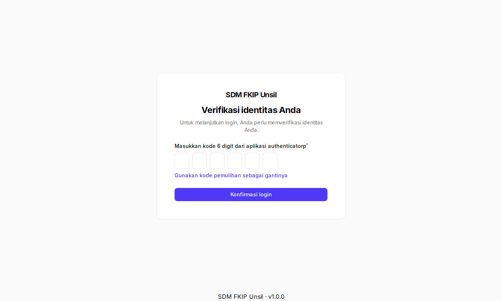
2. Dasbor
Ringkasan jumlah dosen/tendik, persentase S3 dan serdos, usulan menunggu, pengingat, serta grafik jabatan dan pendidikan. Filter Program studi mempersempit angka.
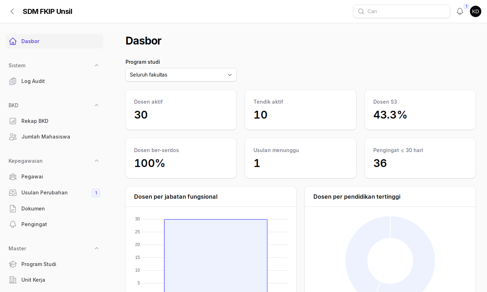
3. Mengelola pegawai
- Kepegawaian → Pegawai: cari, saring, atau ekspor daftar.
- Tekan Buat untuk menambah pegawai (NIK harus unik). Untuk banyak data gunakan Impor (Excel) dan periksa baris gagal.
- Buka satu pegawai untuk melihat biodata dan seluruh riwayat. NIK/NPWP/rekening tampil bertopeng; tombol Tampilkan (maks 10 per menit) tercatat di log audit.
- Dari halaman pegawai, Buat akun mengirim surel aktivasi (butuh surel Unsil), dan Cetak profil menghasilkan PDF tanpa data sensitif.
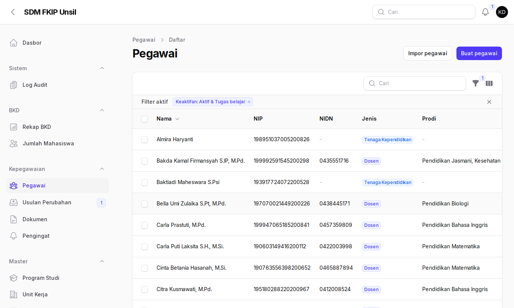
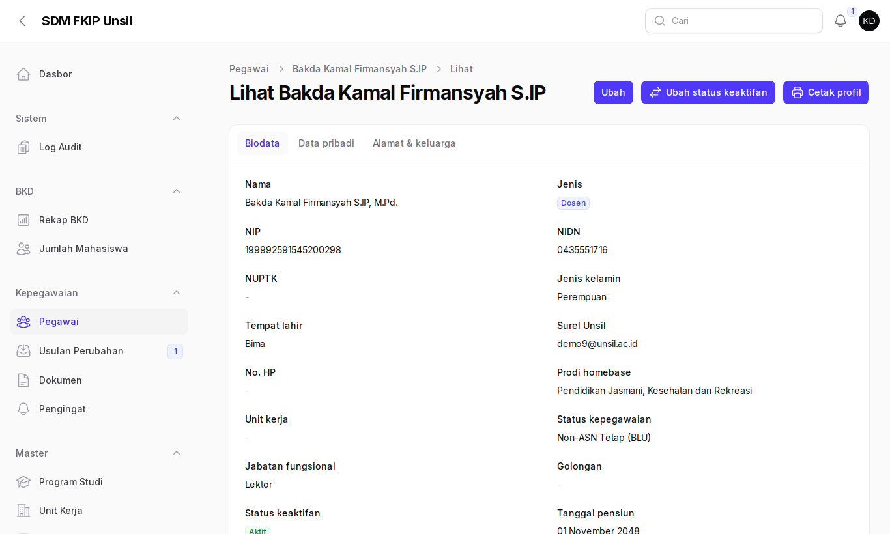
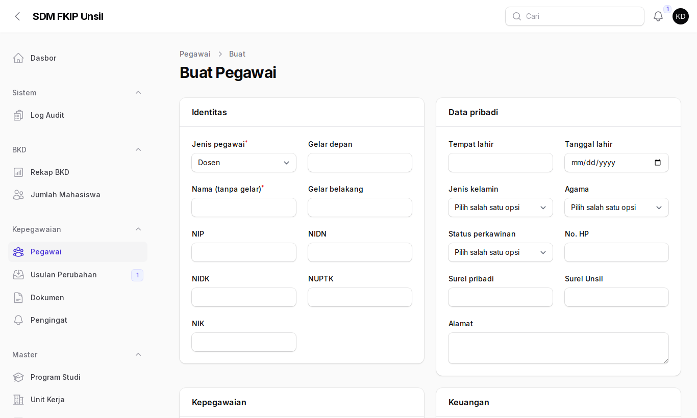
4. Memverifikasi usulan perubahan
- Kepegawaian → Usulan Perubahan (lencana menunjukkan jumlah menunggu).
- Buka usulan, bandingkan data lama dan data baru, dan buka tautan bukti (tercatat).
- Pilih Setujui (data langsung diterapkan), Kembalikan atau Tolak (catatan minimal 10 karakter).
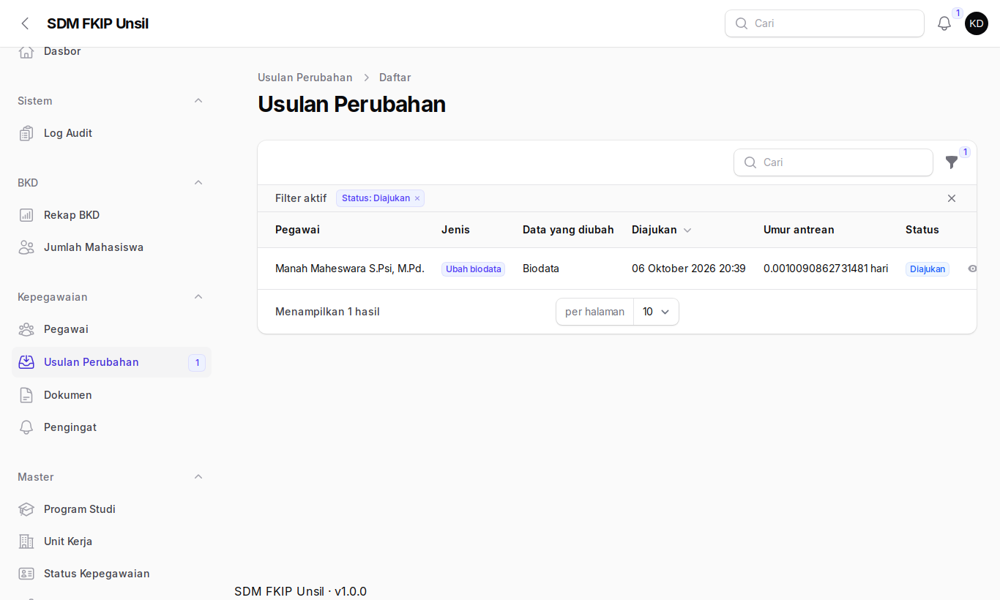
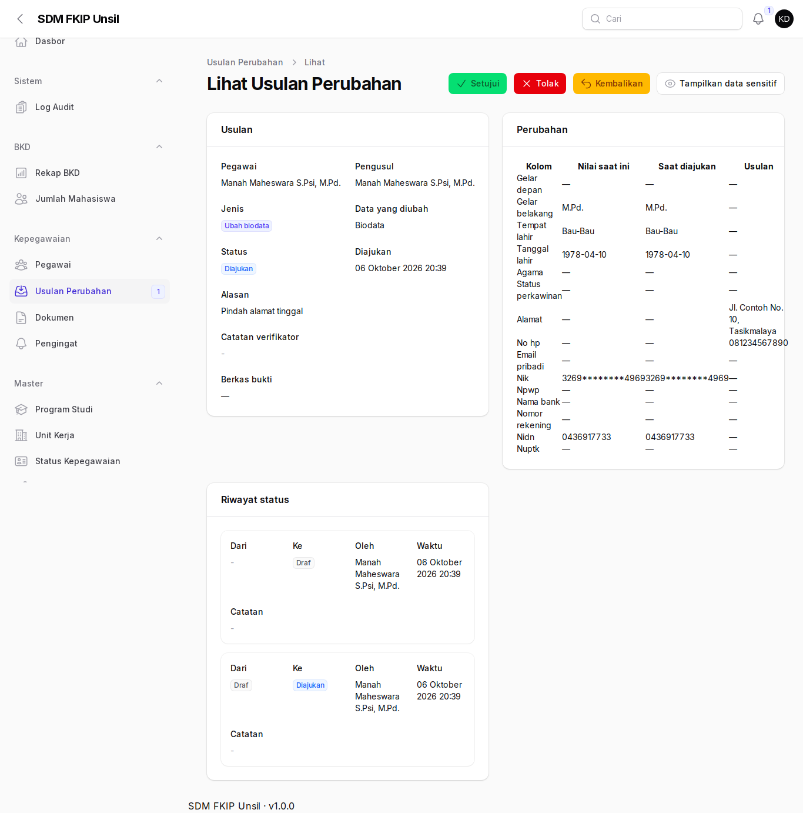
5. Pengingat, dokumen, dan BKD
Pengingat menghimpun tenggat KP, KGB, jabatan fungsional, pensiun, dokumen, sertifikasi, dan studi lanjut; ubah status menjadi ditindaklanjuti atau diabaikan (disertai catatan). Dokumen memantau masa berlaku. Rekap BKD menerima impor berkas SISTER per semester.
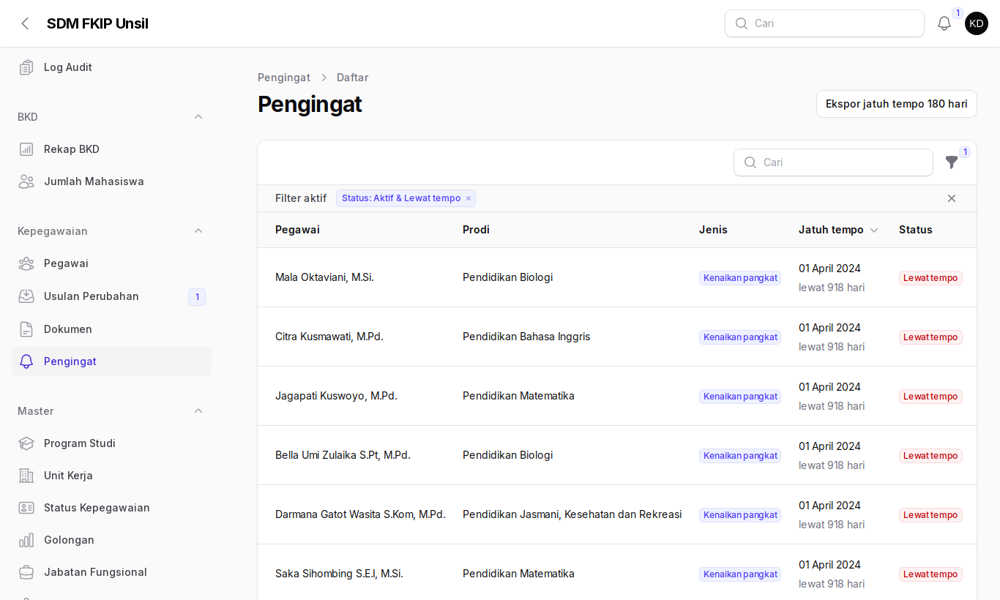
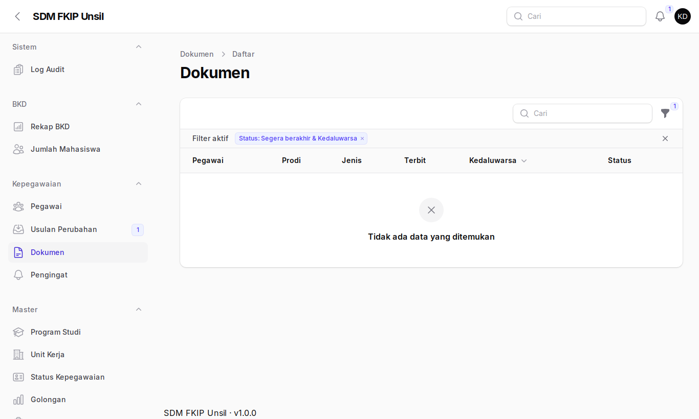
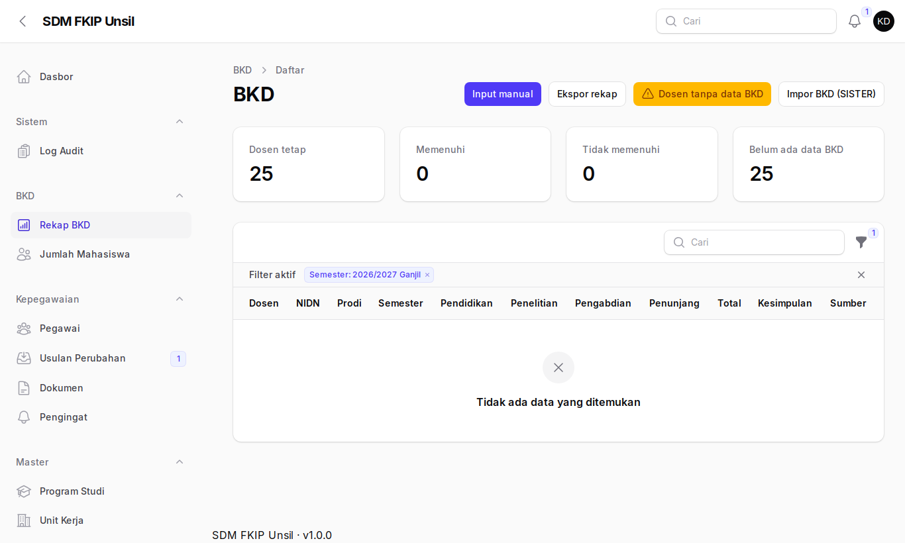
6. Laporan
Laporan Akreditasi mengekspor profil dosen prodi, beban kerja, rekognisi, pengembangan kompetensi, tenaga kependidikan, dan rasio dosen–mahasiswa (maks 5 ekspor per menit; berkas sementara dihapus ≤ 24 jam). Laporan Kepegawaian memuat DUK, rekap pejabat, dan daftar pensiun; PDF diproses di latar belakang lalu muncul notifikasi unduh.
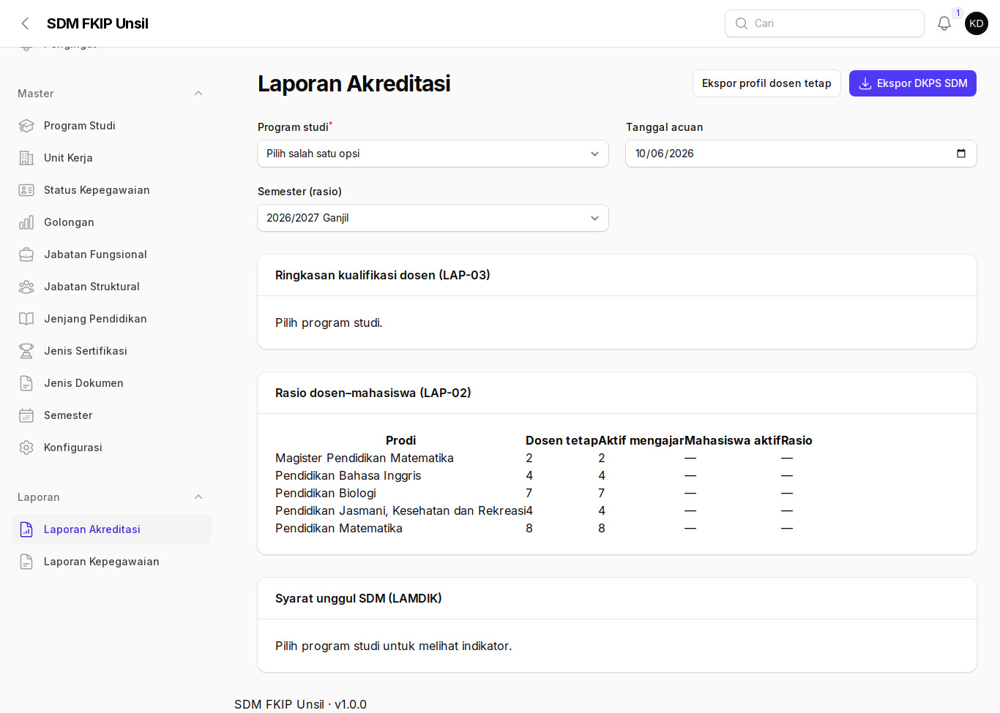
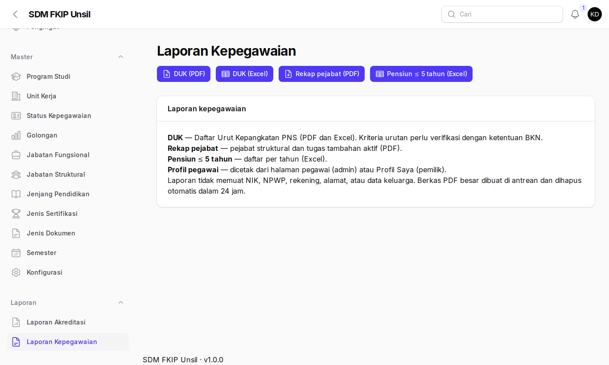
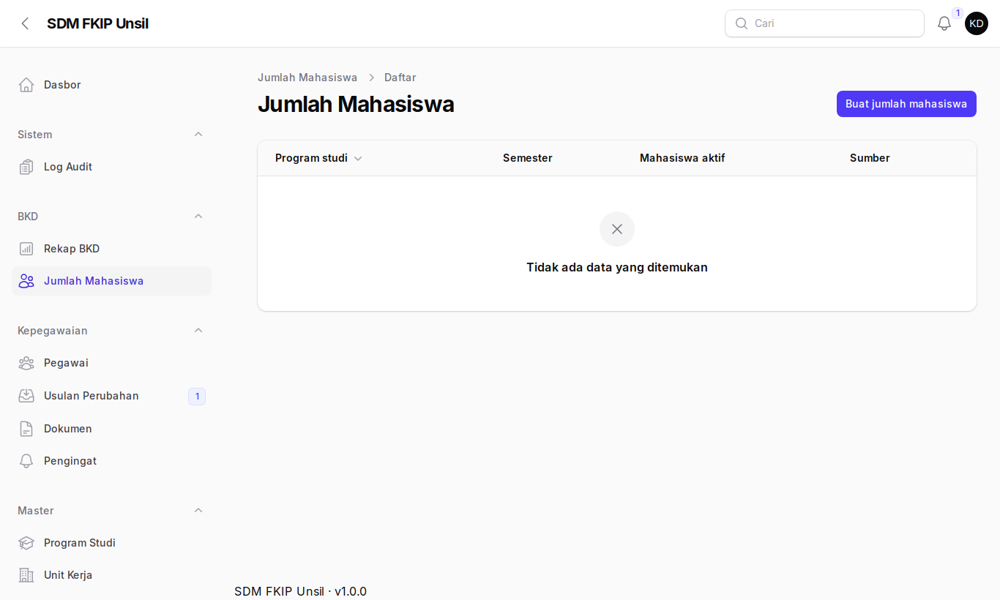
7. Master dan konfigurasi
Menu Master (prodi, unit, status, golongan, jabatan, jenjang, jenis dokumen/sertifikasi, semester) dan Sistem → Konfigurasi (BUP, pembulatan TMT pensiun, interval KP/KGB, kebijakan privasi, ambang). Perubahan menghitung ulang pengingat otomatis tanpa deploy.
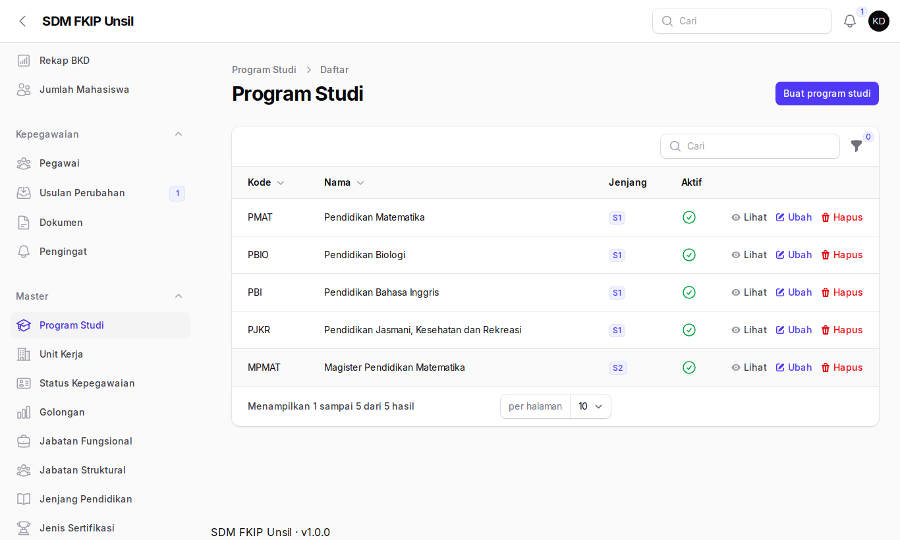
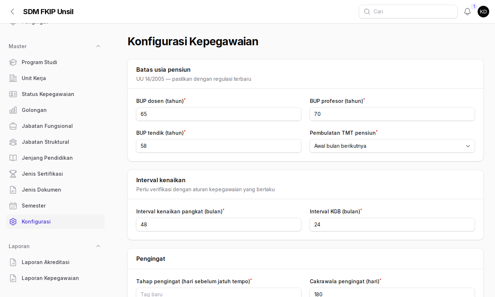
Tanya jawab
Tautan berkas ditolak?
Gunakan tautan satu berkas (bukan folder) berawalan https dari Google Drive/Docs atau unsil.ac.id; pemendek URL tidak diterima.
Usulan perlu dikembalikan?
Pilih Kembalikan dan tulis catatan yang jelas (min. 10 karakter); pegawai memperbaiki dan mengirim ulang.
Menampilkan NIK ditolak "terlalu banyak permintaan"?
Batas 10 tampilan per menit; tunggu satu menit.